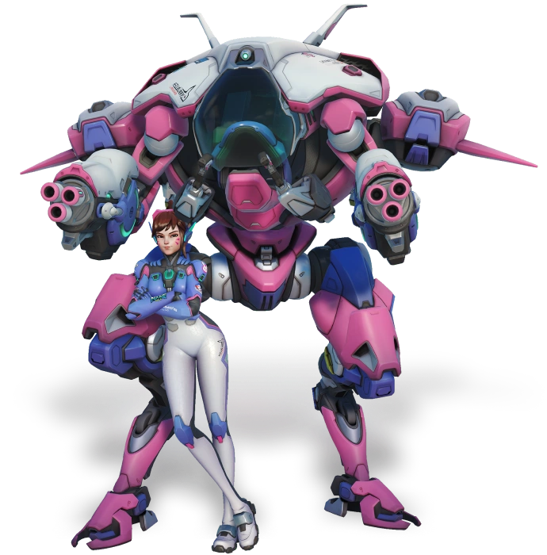
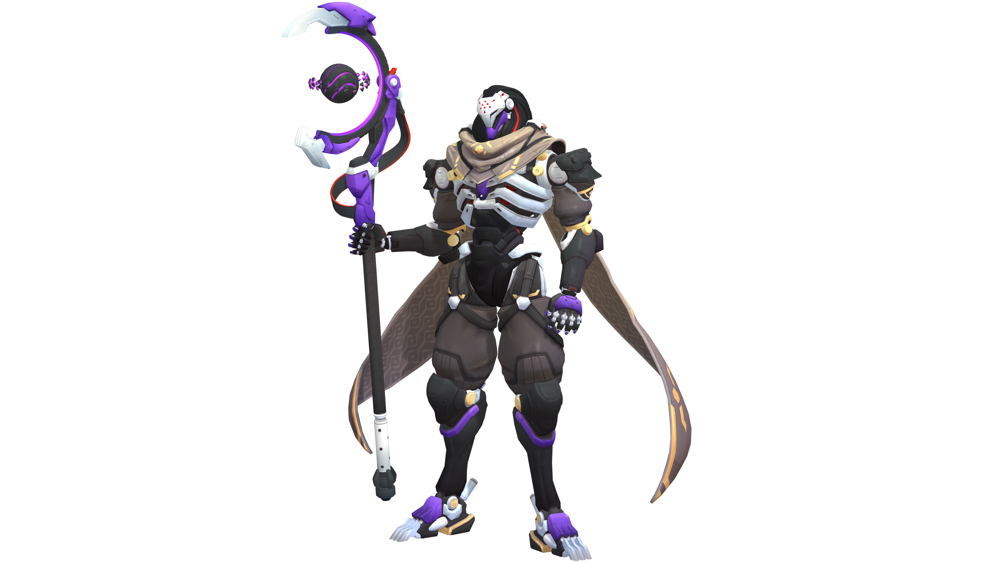

Tank heroes soak up damage, create space for your team, and break apart fortified positions, like closely-grouped enemies and narrow choke-points. If you’re a tank, you lead the charge.
Exceptions
While Roadhog lacks a barrier to absorb enemy attacks, his Take a Breather ability reduces incoming damage by 50% while healing back half of his health, allowing him to survive soaking up large amounts of damage. This leaves the door open for his teammates to pick off distracted enemies and for Roadhog himself to single out enemies with his Chain Hook. While he excels at staying alive, his lack of ability to actively protect his teammates tends to cast Roadhog as a secondary tank, preferably while his team is attacking an objective rather than defending.
Wrecking Ball offers very little protection to the team, making him weak when defending. Unlike other Tanks, he is not meant for long engagements, with his only protection ability, Adaptive Shield, having a long cooldown and a relatively short duration. Instead, Wrecking Ball's role is to disrupt the enemy team with Piledriver, or to simply deny space with Grappling Claw or Minefield. This makes Wrecking Ball an extremely aggressive Tank.
Zarya has a smaller health pool than the other tanks, no armor, and is barely capable of protecting multiple members of her team. However, her ability to project barriers onto one to two allies at a time can help her and her teammates survive large bursts of damage while dramatically improving her firepower. Because of the lack of defense she offers to the team, especially in comparison to Reinhardt or Winston's barriers, she is often picked as a secondary tank, mostly to provide some additional close-range, sustained damage. She is most effective when used in and around cover, taking limited bursts of damage at a time and relying on her shield to regenerate between exposures. Zarya is a unique tank because of her regenerating hitpoints, which allows her to work effectively by herself as a proxy-positioned (offside) harassment, not requiring constant healing and only needing line of sight to her team to be able to provide barriers when needed.
D.Va
Hana Song—better known by her screen name “D.Va”–is the best of the best. A former professional gamer, D.Va now puts her skills to use as a mech pilot in defense of South Korea. She and the other pilots, known as the MEKA Squad, stand between their country and the invading Gwishin: a mechanical threat from deep beneath the sea.
Gwishin
More than two decades ago, South Korea was attacked by a colossal omnic monstrosity that rose from the depths of the East China Sea. The massive, lumbering construct caused catastrophic damage to coastal cities before it was driven back beneath the waves. In response, the South Korean government developed a mechanized armored drone unit, called MEKA, to protect urban environments in future engagements with the omnic threat.
The government's fears proved to be well founded, as a disturbing pattern of attacks emerged. Every few years, the monstrosity would rise from the sea to assault South Korea and its neighbors. The omnic learned from these encounters, often reconfiguring itself in a different form and appearing with new weapons and capabilities. Each incident ended in a stalemate, with the monstrosity defeated but not destroyed.
MEKA Squad
As the omnic continued to adapt, it eventually disrupted MEKA's drone-control networks, forcing the military to place pilots in the mechs. Scrambling to find suitable candidates, the government turned to the country's professional gamers, who possessed the necessary reflexes and instincts to operate the mechs' advanced weapons systems. Top stars willingly joined the effort via the nation's compulsory military service, including reigning world champion Hana Song, also known as "D.Va." Famous for her elite skills, D.Va was a fierce competitor who played to win at all costs, and she had a well-earned reputation for showing no mercy to her opponents.
D.Va quickly grew in skill to become MEKA’s top pilot, even streaming combat operations to her adoring fans, but the Gwishin omnics’ increasing attacks on South Korea began to take a heavy toll on the MEKA squad. Where MEKA could once count on months of training and downtime between omnic assaults, a sudden attack between predicted intervals forced Hana to repel the Gwishin alone. The media praised D.Va's singlehanded defense of South Korea, though in truth, the superstar was seconds from a real game over. As the Null Sector threat emerged in Korea, D.Va obtained a special dispensation from her commander to join up as one of Overwatch's new guard, assessing the Null Sector threat alongside Cole Cassidy and his latest recruits.
Doomfist

Doomfist is the calculating leader of Talon, a terrorist organization and paramilitary force that works in direct opposition to Overwatch.
Omnic Crisis
Akande Ogundimu was the son of a wealthy Nigerian family who owned a prosthetic-technology company. Well-trained and proficient in a wide spectrum of bone-shattering fighting styles, Ogundimu’s stellar professional fighting career was cut short with the loss of his right arm during the Omnic Crisis. And while his family’s technology could replace his arm, without the challenge and crucible of competition, Ogundimu felt utterly lost. In that time, he searched for something to devote himself to. It was only when the current Doomfist, Akinjide Adeyemi, tapped him to join his ranks that Ogundimu saw his way forward.
Talon
Ogundimu was trained by Adeyemi himself and became one of his most trusted confidants, excelling not only because of his physical enhancements, but because he was extraordinarily well-suited for the work. He understood the importance of discipline and leadership, and possessed an iron will that was unmatched. It was not long before Talon also recognized his formidable skills.
Before long, Adeyemi’s protégé made a fateful choice for the good of Talon. Ogundimu slayed his mentor, and assumed the mantle of Doomfist—taking on both the infamous weapon and the name. Talon understood the new Doomfist was an unmatched strategist, capable of leading both Talon’s military arm and its dealings that required more subterfuge. He would be the perfect replacement, and the rest of the organization began to fall in line.
Under Doomfist, Talon underwent a significant transformation to become not just a ubiquitous shadow presence throughout the world, but a private military organization as well. This would prove a difficult balancing act, yet Doomfist was sure that they could always influence, obfuscate, or terminate any who got too close to the truth.
Eight years prior to Null Sector’s global assault, Doomfist was captured by an Overwatch strike team that included Tracer, Winston, and Genji. He was imprisoned in a maximum-security facility, where he waited patiently for his plots to play out. It was only when he sensed the time had come that he broke out of his prison and recovered his gauntlet. Now, Doomfist has retaken his place in Talon, ready to drive the organization and humanity to its natural point of refinement through global conflict.
Junker Queen

Armed with her axe, Carnage, and her electromagnetic gauntlet, the cutthroat leader of the Junkers is on a mission to rule the world.
Wastelander
Young, brash, and confident, Odessa “Dez” Stone was born in a small Outback settlement. As one of six children, she constantly had to fight to prove her dominance. Her mother, a former Australian Liberation Front cell leader, ran the town watch, and her father, also a former ALF member, negotiated trade with the other settlements. Together they taught Dez the rules of the wasteland, how to operate in a group, and how to survive the irradiated Outback.
For those living in the shadow of the ruined Australian omnium, the Omnic Crisis never really ended, it just took a different shape. The survivors and descendants of the ALF and the omnics who roamed the outback clashed in an unending battle for land and resources. Dez and her friends learned to fight from a young age, and quickly formed a posse to hunt Wastelander omnics. She used pieces and equipment of her fallen enemies to craft macabre armor and weapons for herself, including a gauntlet that could manipulate electromagnetism.
The Reckoning
Every few seasons Junkertown hosts the Reckoning—a boisterous, week-long gathering full of feasting, fighting, and shows of strength. Anyone may publicly challenge the reigning Junker monarch provided they defeat all the other challengers first. It’s the main event of the Reckoning: challengers spend all year training, building ostentatious mechs and weaponry, and cultivating juicy rivalries.
In her Reckoning debut, Dez tore through the wall of challengers, leveraging her size and experience in the wastelands to defeat more experienced opponents. Even mechs couldn’t stop her; she took them all down using her weapons and unwavering determination. She fought her way to Mason Howl, the reigning Junker King. Their match was legendary with Dez triumphant in the end. The fight—which was filmed and broadcast throughout the Outback—made her wildly popular overnight. It gave her clout with all the factions, which was exactly what she wanted.
Junker Queen
After defeating King Howl, Dez took over Junkertown and set to work uniting the factions, one diplomatic beatdown at a time. In time, the Reckoning even produced a champion of her own: Wrecking Ball. Now, as the Junker Queen, Dez uses her wastelander knowledge to control the Junkers and impose order when necessary, training them to fight the omnic menace. That might mean rewarding a faction leader or taking them down. All in a day’s work.
Orisa

Built from parts of one of Numbani's short-lived OR15 defense robots, Orisa is the city's newest protector, though she still has much to learn.
Efi Oladele
Originally put into service before the Omnic Crisis, the OR14 "Idina" line of security robots was built in Nigeria's massive manufacturing omnium. After the war, they were taken out of production, along with many of the other models used during the Crisis. Twenty years later, Numbani revived and recommissioned the OR14 program to protect the city from external threats. These new OR15s were deployed for a short time before they were destroyed in an attack by Doomfist.
Following the attack, the program was scrapped, and the civic government sold off the remaining OR15 inventory. Some parts were purchased by eleven-year-old Efi Oladele, a brilliant girl whose early accomplishments in robotics and artificial intelligence had already earned her the Adawe Foundation's prestigious "genius grant."
With the approval of her understanding and open-minded parents, Efi spent the bulk of her grant money to acquire one of the decommissioned OR15 bots. She believed that Numbani needed a protector and that an upgraded OR15 could do just that. Efi repaired and reconfigured the robot and installed a personality core that she had designed herself.
She named Numbani's newest hero Orisa.
Hero of Numbani
Though Orisa was a marvel when activated, Efi spent a long time finding her optimal protocols. The robot’s inexperience could cause her to be a liability, especially in learning her own strength. But when Talon began an orchestrated attack on the City of Harmony, Efi knew Orisa’s programming would likely be put to the test. Luckily Efi had just been gifted with the final piece she needed for Orisa’s defensive capabilities: a Tobelstein reactor from Lúcio. While Efi was a superfan of Lúcio's music, Lúcio was a superfan of Efi’s ingenuity. He agreed to perform a benefit concert in Numbani for the victims of Doomfist’s attack.
During Lúcio's concert in Unity Square, Talon struck. Orisa teamed up with Lúcio to defend the concertgoers from Doomfist, who was determined to sow fear in the populace. While Orisa, Efi, and Lúcio succeeded in protecting Numbani, they knew peace was a gift to be carefully guarded.
After expelling Talon from Numbani, Efi and Orisa met with former Overwatch Commander Sojourn about what it meant to be a hero. Efi took Sojourn’s words to heart and used the experience to think out new upgrades for Orisa. As Orisa continues to grow with her brilliant creator at her side, one thing seems certain: Numbani’s future is in good hands.
Ramattra
The brutal leader of Null Sector will stop at nothing to see his vision for the world realized.
Shambali
Ramattra was never designed to co-exist with humanity. The Ravager omnic series was created early in the Omnic Crisis, part of a commander class of omnics whose role was to guide units into combat and adapt various strategic protocols to battlefield condition changes in real time.
After the Crisis, Ramattra heard rumors of a mysterious omnic named Aurora—the first of their kind. Intrigued and seeking direction, Ramattra embarked on a pilgrimage to the Shambali Monastery in Nepal, a place where Aurora was said to have resided. Ramattra survived the harsh journey and was welcomed by Tekhartha Mondatta. Choosing to become a monk of the Shambali, Ramattra studied under Mondatta for years, learning about the Iris—the mysterious phenomenon at the heart of the monks’ teachings—and the importance of coexisting with humans.
Years later, Ramattra began venturing outside the temple seeking enlightenment. It was on one of his journeys that he met an omnic named Zenyatta whom he guided to Shambali, in hopes the omnic would find purpose there as he did. However, as time wore on, Ramattra failed to see true progress in the monks’ mission of peace. The Shambali urged Ramattra to be patient, but all around him, Ramattra saw his people dying . . . and no one taking action.
Null Sector
Ramattra knew he could follow the Shambali teachings no longer. He left the temple, seeking out omnics fighting in secret around the world and protecting them from the abuse of humans. The truths he shared with those he met inspired others and over time he gained an underground following of these hurt and angry omnics. Ramattra initially focused on building loyalty in his followers, but true radicalization and militarization would not be far behind.
Soon Ramattra’s forces were large enough to warrant a test. The target was London, to liberate the omnics there and see how his forces would perform to a world nearly two decades after the Omnic Crisis. Null Sector was ultimately defeated by Overwatch, a scenario Ramattra did not anticipate since Overwatch was forbidden to operate in the country. In addition, the omnics of London did not support the sacrifices on their behalf, going so far as to denounce the actions of Null Sector.
It’s been years since Ramattra—or Null Sector—was last seen. But now, for reasons unknown, Null Sector has appeared in the skies over Paris, Busan, and Rio. What’s certain is that Ramattra will see his plans for the future of omnics through . . . whatever the cost.